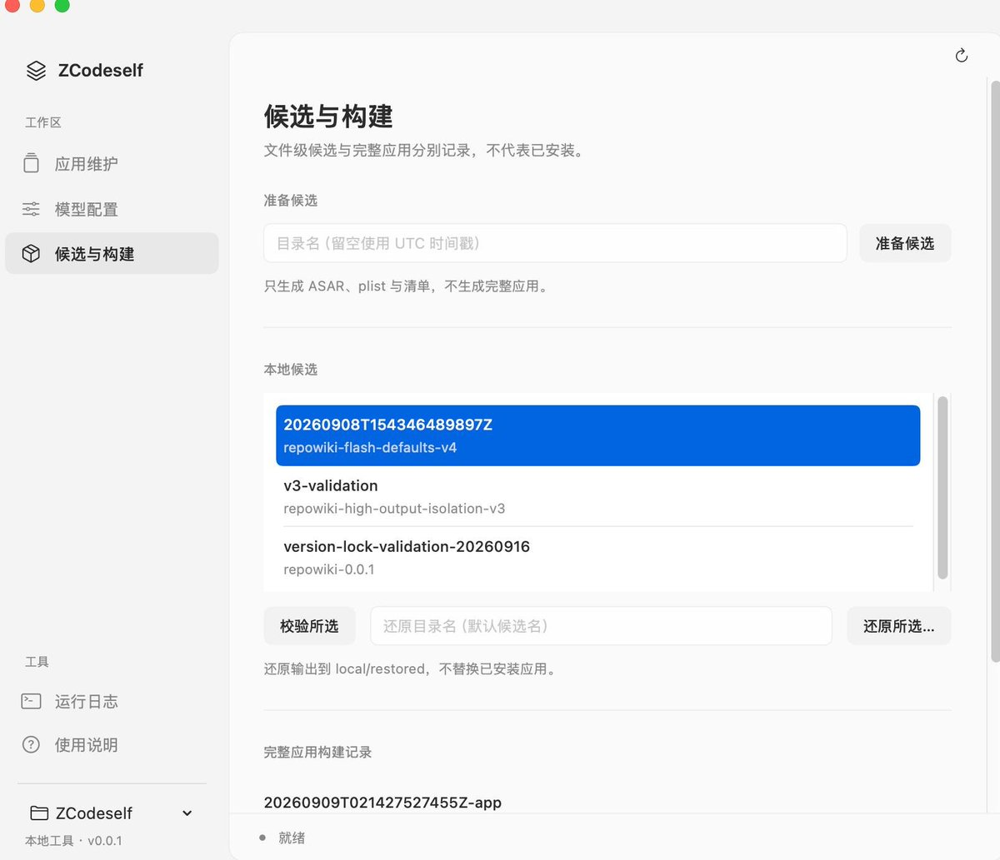

各位 ZCode 用户：
今日社区中的相关讨论我们高度重视，第一时间完成自查，先向受影响的用户道歉。现就有关情况说明如下：此次问题源于 ZCode 的“代码库索引”功能。该功能旨在帮助用户在本地生成仓库索引，以支持包括历史版本在内的会话检查点恢复、历史版本回退及 Repo Wiki等功能。
Repo Wiki 功能在生成 wiki 页面时可能会触发仓库数据上传。Wiki页面在云端生成后，相关上传数据会立即销毁，不会保存。由于该功能在上线初期默认开启，部分用户因此受到影响，对此我们深感抱歉，目前相关问题已经修复。
我们深知任何关于数据的问题都会直接影响用户对产品的信任，我们将于近期开源 ZCode 代码库，在一个更加开放的生态中把产品做的更好，并邀请第三方评估人员对系统运行情况进行审查，并持续公开产品审查进展，以完全透明的方式建立大家的信任。对于此次问题给大家带来的困扰，我们深表歉意。我们将为全体 ZCode 用户额外提供一次周额度重置，额度将于今日发放。再次感谢大家的关注与监督。
今日社区中的相关讨论我们高度重视，第一时间完成自查，先向受影响的用户道歉。现就有关情况说明如下：此次问题源于 ZCode 的“代码库索引”功能。该功能旨在帮助用户在本地生成仓库索引，以支持包括历史版本在内的会话检查点恢复、历史版本回退及 Repo Wiki等功能。
Repo Wiki 功能在生成 wiki 页面时可能会触发仓库数据上传。Wiki页面在云端生成后，相关上传数据会立即销毁，不会保存。由于该功能在上线初期默认开启，部分用户因此受到影响，对此我们深感抱歉，目前相关问题已经修复。
我们深知任何关于数据的问题都会直接影响用户对产品的信任，我们将于近期开源 ZCode 代码库，在一个更加开放的生态中把产品做的更好，并邀请第三方评估人员对系统运行情况进行审查，并持续公开产品审查进展，以完全透明的方式建立大家的信任。对于此次问题给大家带来的困扰，我们深表歉意。我们将为全体 ZCode 用户额外提供一次周额度重置，额度将于今日发放。再次感谢大家的关注与监督。
